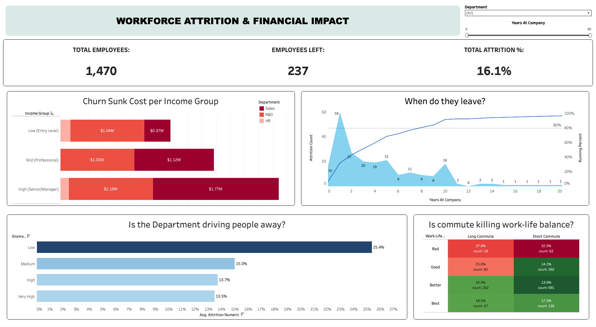
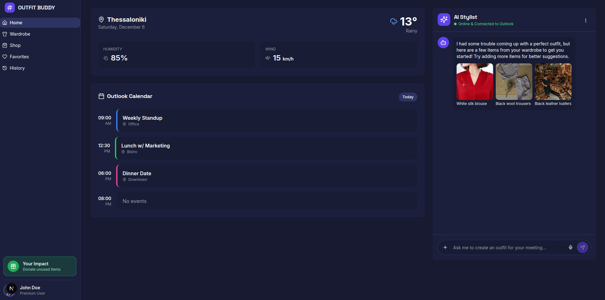
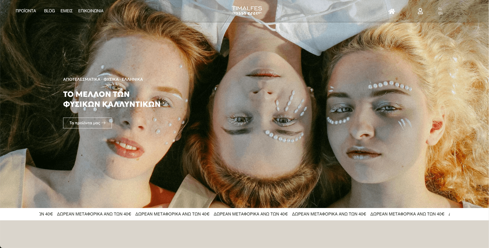
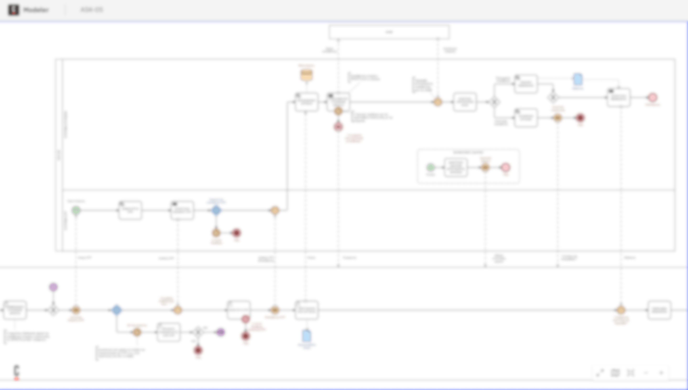

BUSINESS ANALYST & DIGITAL MARKETER
MSc Applied Informatics student with a background in Business Administration, transitioning into Business Analysis by combining business understanding with hands-on experience in requirements analysis, process structuring, and decision support.
MSc Applied Informatics
Thesis: Agentic AI & Business Process Management
Digital Marketing Manager
Strategic planning, ROAS optimization, and data translation.
How I Work
Understanding & Documenting Business Needs
I focus on learning how to turn business ideas into clear, simple plans. Using tools discovered during my MSc, I help organize data and workflows so technical teams stay aligned with business goals.
Selected Work
Analyzed IBM employee data to identify key drivers of workforce turnover and estimate financial impact. Translated data findings into business-relevant insights to support retention strategy and workforce planning.

Defined the product concept, mapped user interaction flows, and structured system logic for an AI styling assistant. Silver Medal for solution design and cross-functional coordination.

Restructuring the e-commerce setup for a premium brand. Focused on cleaning up the checkout logic and implementing reliable data tracking.

Utilizing Camunda Modeler I'm currently working on optimizing an e-shop's operational logic. Through mapping the current flows and identifying bottlenecks, I'm designing a more efficient process.

The Next Step
I am currently open to professional networking and discussing new opportunities within the tech business landscape.